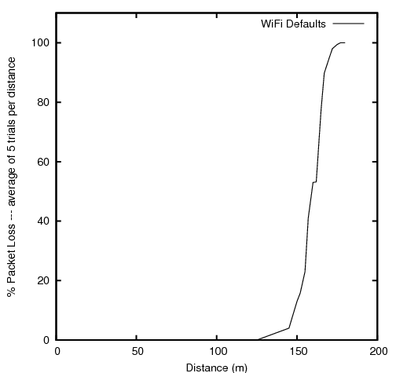

3.5. Statistical Framework¶
This chapter outlines work on simulation data collection and the statistical framework for ns-3.
The source code for the statistical framework lives in the directory
src/stats.
3.5.1. Goals¶
Primary objectives for this effort are the following:
Provide functionality to record, calculate, and present data and statistics for analysis of network simulations.
Boost simulation performance by reducing the need to generate extensive trace logs in order to collect data.
Enable simulation control via online statistics, e.g. terminating simulations or repeating trials.
Derived sub-goals and other target features include the following:
Integration with the existing ns-3 tracing system as the basic instrumentation framework of the internal simulation engine, e.g. network stacks, net devices, and channels.
Enabling users to utilize the statistics framework without requiring use of the tracing system.
Helping users create, aggregate, and analyze data over multiple trials.
Support for user created instrumentation, e.g. of application specific events and measures.
Low memory and CPU overhead when the package is not in use.
Leveraging existing analysis and output tools as much as possible. The framework may provide some basic statistics, but the focus is on collecting data and making it accessible for manipulation in established tools.
Eventual support for distributing independent replications is important but not included in the first round of features.
3.5.2. Overview¶
The statistics framework includes the following features:
The core framework and two basic data collectors: A counter, and a min/max/avg/total observer.
Extensions of those to easily work with times and packets.
Plaintext output formatted for OMNet++.
Database output using SQLite, a standalone, lightweight, high performance SQL engine.
Mandatory and open ended metadata for describing and working with runs.
An example based on the notional experiment of examining the properties of NS-3’s default ad hoc WiFi performance. It incorporates the following:
Constructs of a two node ad hoc WiFi network, with the nodes a parameterized distance apart.
UDP traffic source and sink applications with slightly different behavior and measurement hooks than the stock classes.
Data collection from the NS-3 core via existing trace signals, in particular data on frames transmitted and received by the WiFi MAC objects.
Instrumentation of custom applications by connecting new trace signals to the stat framework, as well as via direct updates. Information is recorded about total packets sent and received, bytes transmitted, and end-to-end delay.
An example of using packet tags to track end-to-end delay.
A simple control script which runs a number of trials of the experiment at varying distances and queries the resulting database to produce a graph using GNUPlot.
3.5.3. To-Do¶
High priority items include:
Inclusion of online statistics code, e.g. for memory efficient confidence intervals.
Provisions in the data collectors for terminating runs, i.e. when a threshold or confidence is met.
Data collectors for logging samples over time, and output to the various formats.
Demonstrate writing simple cyclic event glue to regularly poll some value.
Each of those should prove straightforward to incorporate in the current framework.
3.5.4. Approach¶
The framework is based around the following core principles:
One experiment trial is conducted by one instance of a simulation program, whether in parallel or serially.
A control script executes instances of the simulation, varying parameters as necessary.
Data is collected and stored for plotting and analysis using external scripts and existing tools.
Measures within the ns-3 core are taken by connecting the stat framework to existing trace signals.
Trace signals or direct manipulation of the framework may be used to instrument custom simulation code.
Those basic components of the framework and their interactions are depicted in the following figure.

3.5.5. Example¶
This section goes through the process of constructing an experiment in the framework and producing data for analysis (graphs) from it, demonstrating the structure and API along the way.
3.5.5.1. Question¶
‘’What is the (simulated) performance of ns-3’s WiFi NetDevices (using the default settings)? How far apart can wireless nodes be in a simulation before they cannot communicate reliably?’’
Hypothesis: Based on knowledge of real life performance, the nodes should communicate reasonably well to at least 100m apart. Communication beyond 200m shouldn’t be feasible.
Although not a very common question in simulation contexts, this is an important property of which simulation developers should have a basic understanding. It is also a common study done on live hardware.
3.5.5.2. Simulation Program¶
The first thing to do in implementing this experiment is developing the simulation program. The code for this example can be found in examples/stats/wifi-example-sim.cc. It does the following main steps.
Declaring parameters and parsing the command line using
ns3::CommandLine.double distance = 50.0; string format("OMNet++"); string experiment("wifi-distance-test"); string strategy("wifi-default"); string runID; CommandLine cmd(__FILE__); cmd.AddValue("distance", "Distance apart to place nodes(in meters).", distance); cmd.AddValue("format", "Format to use for data output.", format); cmd.AddValue("experiment", "Identifier for experiment.", experiment); cmd.AddValue("strategy", "Identifier for strategy.", strategy); cmd.AddValue("run", "Identifier for run.", runID); cmd.Parse(argc, argv);
Creating nodes and network stacks using
ns3::NodeContainer,ns3::WiFiHelper, andns3::InternetStackHelper.NodeContainer nodes; nodes.Create(2); WifiHelper wifi; wifi.SetMac("ns3::AdhocWifiMac"); wifi.SetPhy("ns3::WifiPhy"); NetDeviceContainer nodeDevices = wifi.Install(nodes); InternetStackHelper internet; internet.Install(nodes); Ipv4AddressHelper ipAddrs; ipAddrs.SetBase("192.168.0.0", "255.255.255.0"); ipAddrs.Assign(nodeDevices);
Positioning the nodes using
ns3::MobilityHelper. By default the nodes have static mobility and won’t move, but must be positioned the given distance apart. There are several ways to do this; it is done here usingns3::ListPositionAllocator, which draws positions from a given list.MobilityHelper mobility; Ptr<ListPositionAllocator> positionAlloc = CreateObject<ListPositionAllocator>(); positionAlloc->Add(Vector(0.0, 0.0, 0.0)); positionAlloc->Add(Vector(0.0, distance, 0.0)); mobility.SetPositionAllocator(positionAlloc); mobility.Install(nodes);
Installing a traffic generator and a traffic sink. The stock
Applicationscould be used, but the example includes custom objects insrc/test/test02-apps.(cc|h). These have a simple behavior, generating a given number of packets spaced at a given interval. As there is only one of each they are installed manually; for a larger set thens3::ApplicationHelperclass could be used. The commented-outConfig::Setline changes the destination of the packets, set to broadcast by default in this example. Note that in general WiFi may have different performance for broadcast and unicast frames due to different rate control and MAC retransmission policies.Ptr<Node> appSource = NodeList::GetNode(0); Ptr<Sender> sender = CreateObject<Sender>(); appSource->AddApplication(sender); sender->Start(Seconds(1)); Ptr<Node> appSink = NodeList::GetNode(1); Ptr<Receiver> receiver = CreateObject<Receiver>(); appSink->AddApplication(receiver); receiver->Start(Seconds(0)); // Config::Set("/NodeList/*/ApplicationList/*/$Sender/Destination", // Ipv4AddressValue("192.168.0.2"));
Configuring the data and statistics to be collected. The basic paradigm is that an
ns3::DataCollectorobject is created to hold information about this particular run, to which observers and calculators are attached to actually generate data. Importantly, run information includes labels for the ‘’experiment’’, ‘’strategy’’, ‘’input’’, and ‘’run’’. These are used to later identify and easily group data from multiple trials.The experiment is the study of which this trial is a member. Here it is on WiFi performance and distance.
The strategy is the code or parameters being examined in this trial. In this example it is fixed, but an obvious extension would be to investigate different WiFi bit rates, each of which would be a different strategy.
The input is the particular problem given to this trial. Here it is simply the distance between the two nodes.
The runID is a unique identifier for this trial with which it’s information is tagged for identification in later analysis. If no run ID is given the example program makes a (weak) run ID using the current time.
Those four pieces of metadata are required, but more may be desired. They may be added to the record using the
ns3::DataCollector::AddMetadata()method.DataCollector data; data.DescribeRun(experiment, strategy, input, runID); data.AddMetadata("author", "tjkopena");
Actual observation and calculating is done by
ns3::DataCalculatorobjects, of which several different types exist. These are created by the simulation program, attached to reporting or sampling code, and then registered with thens3::DataCollectorso they will be queried later for their output. One easy observation mechanism is to use existing trace sources, for example to instrument objects in the ns-3 core without changing their code. Here a counter is attached directly to a trace signal in the WiFi MAC layer on the target node.Ptr<PacketCounterCalculator> totalRx = CreateObject<PacketCounterCalculator>(); totalRx->SetKey("wifi-rx-frames"); Config::Connect("/NodeList/1/DeviceList/*/$ns3::WifiNetDevice/Rx", MakeCallback(&PacketCounterCalculator::FrameUpdate, totalRx)); data.AddDataCalculator(totalRx);
Calculators may also be manipulated directly. In this example, a counter is created and passed to the traffic sink application to be updated when packets are received.
Ptr<CounterCalculator<>> appRx = CreateObject<CounterCalculator<>>(); appRx->SetKey("receiver-rx-packets"); receiver->SetCounter(appRx); data.AddDataCalculator(appRx);
To increment the count, the sink’s packet processing code then calls one of the calculator’s update methods.
m_calc->Update();
The program includes several other examples as well, using both the primitive calculators such as
ns3::CounterCalculatorand those adapted for observing packets and times. Insrc/test/test02-apps.(cc|h)it also creates a simple custom tag which it uses to track end-to-end delay for generated packets, reporting results to ans3::TimeMinMaxAvgTotalCalculatordata calculator.Running the simulation, which is very straightforward once constructed.
Simulator::Run();
Generating either OMNet++ or SQLite output, depending on the command line arguments. To do this a
ns3::DataOutputInterfaceobject is created and configured. The specific type of this will determine the output format. This object is then given thens3::DataCollectorobject which it interrogates to produce the output.Ptr<DataOutputInterface> output; if (format == "OMNet++") { NS_LOG_INFO("Creating OMNet++ formatted data output."); output = CreateObject<OmnetDataOutput>(); } else { # ifdef STAT_USE_DB NS_LOG_INFO("Creating SQLite formatted data output."); output = CreateObject<SqliteDataOutput>(); # endif } output->Output(data);
Freeing any memory used by the simulation. This should come at the end of the main function for the example.
Simulator::Destroy();
3.5.5.2.1. Logging¶
To see what the example program, applications, and stat framework are doing in detail, set the NS_LOG variable appropriately. The following will provide copious output from all three.
$ export NS_LOG=WiFiDistanceExperiment:WiFiDistanceApps
Note that this slows down the simulation extraordinarily.
3.5.5.2.2. Sample Output¶
Compiling and simply running the test program will append OMNet++ formatted output such as the following to data.sca.
run run-1212239121
attr experiment "wifi-distance-test"
attr strategy "wifi-default"
attr input "50"
attr description ""
attr "author" "tjkopena"
scalar wifi-tx-frames count 30
scalar wifi-rx-frames count 30
scalar sender-tx-packets count 30
scalar receiver-rx-packets count 30
scalar tx-pkt-size count 30
scalar tx-pkt-size total 1920
scalar tx-pkt-size average 64
scalar tx-pkt-size max 64
scalar tx-pkt-size min 64
scalar delay count 30
scalar delay total 5884980ns
scalar delay average 196166ns
scalar delay max 196166ns
scalar delay min 196166ns
3.5.5.3. Control Script¶
In order to automate data collection at a variety of inputs (distances), a simple Bash script is used to execute a series of simulations. It can be found at examples/stats/wifi-example-db.sh. The script is meant to be run from the examples/stats/ directory.
The script runs through a set of distances, collecting the results into an SQLite database. At each distance five trials are conducted to give a better picture of expected performance. The entire experiment takes only a few dozen seconds to run on a low end machine as there is no output during the simulation and little traffic is generated.
#!/bin/sh
DISTANCES="25 50 75 100 125 145 147 150 152 155 157 160 162 165 167 170 172 175 177 180"
TRIALS="1 2 3 4 5"
echo WiFi Experiment Example
if [ -e data.db ]
then
echo Kill data.db?
read ANS
if [ "$ANS" = "yes" -o "$ANS" = "y" ]
then
echo Deleting database
rm data.db
fi
fi
for trial in $TRIALS
do
for distance in $DISTANCES
do
echo Trial $trial, distance $distance
./bin/test02 --format=db --distance=$distance --run=run-$distance-$trial
done
done
3.5.5.4. Analysis and Conclusion¶
Once all trials have been conducted, the script executes a simple SQL query over the database using the SQLite command line program. The query computes average packet loss in each set of trials associated with each distance. It does not take into account different strategies, but the information is present in the database to make some simple extensions and do so. The collected data is then passed to GNUPlot for graphing.
CMD="select exp.input,avg(100-((rx.value*100)/tx.value)) \
from Singletons rx, Singletons tx, Experiments exp \
where rx.run = tx.run AND \
rx.run = exp.run AND \
rx.name='receiver-rx-packets' AND \
tx.name='sender-tx-packets' \
group by exp.input \
order by abs(exp.input) ASC;"
sqlite3 -noheader data.db "$CMD" > wifi-default.data
sed -i "s/|/ /" wifi-default.data
gnuplot wifi-example.gnuplot
The GNUPlot script found at examples/stats/wifi-example.gnuplot simply defines the output format and some basic formatting for the graph.
set terminal postscript portrait enhanced lw 2 "Helvetica" 14
set size 1.0, 0.66
#-------------------------------------------------------
set out "wifi-default.eps"
#set title "Packet Loss Over Distance"
set xlabel "Distance (m) --- average of 5 trials per point"
set xrange [0:200]
set ylabel "% Packet Loss"
set yrange [0:110]
plot "wifi-default.data" with lines title "WiFi Defaults"
3.5.5.4.1. End Result¶
The resulting graph provides no evidence that the default WiFi model’s performance is necessarily unreasonable and lends some confidence to an at least token faithfulness to reality. More importantly, this simple investigation has been carried all the way through using the statistical framework. Success!
